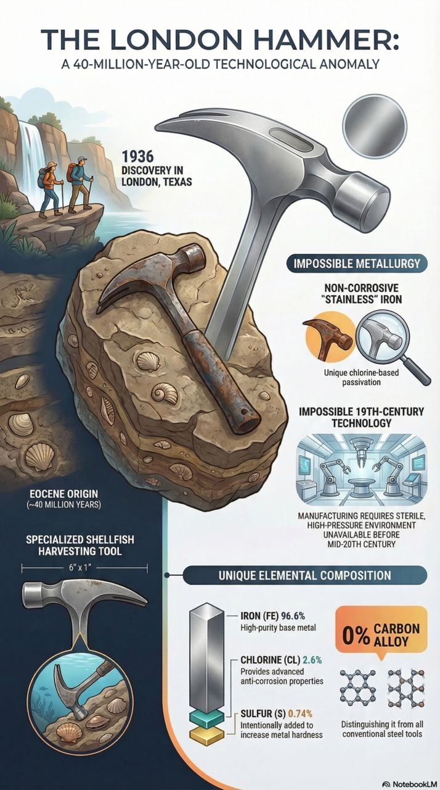

The article “The Hammer inside the Rock,” also known as the “London Hammer,” investigates a mysterious artifact that challenges conventional historical and scientific narratives. The author argues that this object is a genuine Out Of Place ARTifact (OOPART) that provides evidence of sophisticated tool-making intelligences existing millions of years before humans evolved.
1. Discovery and Geologic Context
- The Find: Discovered in June 1936 by Max and Emma Hahn near Red Creek in London, Texas, the artifact was found as a loose rock with a piece of petrified wood protruding from it.
- Encapsulation: When the rock was broken open, it revealed a metal hammerhead affixed to a wooden handle, completely encased within the stone.
- Age of the Rock: The surrounding strata are identified as Eocene, dating the rock between 33.9 and 56 million years old.
- Biological Evidence: The rock contains embedded shells of aquatic bivalves from the Eocene period, suggesting the object was lost when the Texas desert was a shallow shoreline.
2. The “Impossible” Metallurgy
The author highlights the metallurgical composition as the most significant mystery, noting it does not fit any known 19th or 20th-century standards.
- Chemical Profile: The hammerhead is 96.6% iron, 2.6% chlorine, and 0.74% sulfur, with 0% carbon.
- Non-Corrosive Properties: Because it lacks carbon, it is not steel, yet it has not rusted since its discovery over sixty years ago.
- Chlorine Infusion: The presence of chlorine is used to suppress oxidation, but adding chlorine gas to molten iron is a dangerous, complex process requiring sterile, high-tech facilities that did not exist in the 1930s or earlier.
- Sulfur Content: The sulfur content is extraordinarily high (double that of modern stainless steel), likely added intentionally to increase the iron’s hardness and ease of machining.
3. Rebutting the “Scientific Statist” Narrative
The author fiercely rejects the claim by mainstream scientists that this is a common 19th-century miner’s hammer that simply became encased in a lime nodule.
- Size and Style: The hammer is tiny (6 inches long), resembling a jeweler’s or tack hammer rather than a robust mining tool.
- Lack of Precedent: Exhaustive searches of vintage Sears & Roebuck, Montgomery Ward, and other catalogs failed to find any stylistically similar hammers manufactured in the 1800s.
- Manufacturing Impossibility: No iron foundries of the 19th century had the technology to produce forensically pure, chlorine-infused iron without carbon or phosphorous impurities.
4. Purpose and Conclusions
- Intended Use: The author concludes the object is a specialized shellfish dislodging tool. Its non-corrosive metallurgy and specific head design (a small dome on one end and a concave face on the other) are perfectly suited for a marine environment.
- The “Signpost”: The author posits that the hammer was lost 40 million years ago by tool-making creatures of small stature who possessed a sophisticated understanding of metallurgy.
- The Takeaway: The London Hammer serves as a “signpost” toward a reality that is far older and more complex than current scientific models allow, suggesting humans are not the first intelligent species to occupy Earth.
